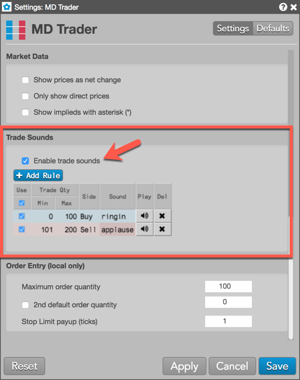
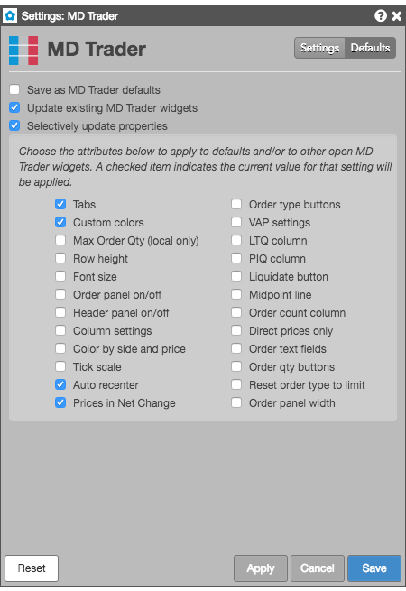

These settings affect only the selected MD Trader widget. To update the default settings with these value for newly-opened MD Trader widgets, or to apply them to existing opened widgets, click Defaults.
| Setting | Description |
|---|---|
| Colors | {% include settings/colors.html %} |
| Highlight midpoint of last recenter | Sets whether to show the midpoint (white line) after the ladder is re-centered. |
| Price increment per row | Sets the multiplier for the tick size at each price in the ladder. For example, if an instrument tick size is .25 and you set Price increment per row to "2", each price in the ladder would tick by .50. This setting consolidates the display of prices in the price ladder and displays a greater range of prices while still showing the total quantity available. If you click the checkbox to enable this setting, the Increment field appears in the MD Trader widget with the tick interval value that you entered. |
| Show only available prices | Displays a floating price ladder by only showing price levels where there is available liquidity. |
| Auto recenter grid (seconds) | Sets how many seconds before MD Trader automatically re-centers the price ladder. |
| Recenter when market has moved (ticks) | Sets whether to automatically recenter the trading ladder when the market moves a specified number of ticks since the last time it was re-centered. |
| Highlight Last Traded Price (LTP) on price column | Sets whether to highlight the price level in the Price column whether the last trade occurred. | Highlight Inside Market | Sets whether to highlight the best Bid and Ask cells in the Price column. |
| Aggregate positions across accounts | Sets whether to display an aggregate net position for the contract across multiple accounts when the account filter is unchecked. |
| Show free-form text fields | Sets whether to show the Text A, Text B and Text TT free-form text fields in the Order Pane. |
| Show held-order toggle | Sets whether to show/hide the "Hold" button in the MD Trader order panel. This button is used to submit new orders as held orders. |
| Reset order type to Limit after each order | Sets whether to reset the Order Type drop-down to Limit automatically after an order with another order type is submitted. |
| Color bid/ask cells by side and price | Sets whether to display the background color of cells in the Bids and Asks columns for price levels on the opposite market side. |
| Ignore global Account List broadcasts | {% include settings/ignore-acct-list.html %} |
| Display algo flyout panel based on mouse location | Sets whether to display the algo flyouts at the top of the widget or parallel to the mouse location when selecting a TT Order Type or algo from the Order Type dropdown, |
| Display only the working qty for orders | Sets whether to display only the total working quantity of orders at each price level instead of the detailed view for working orders. |
| Show LTQ on VAP column | Shows the last-traded quantity (LTQ) in the VAP column. |
| Show aggregated leg columns | If trading an aggregated instrument and you enable this setting, MD Trader will open the corresponding legs of the instrument in separate MD Trader widgets. |
| Show detailed depth on hover | Sets whether to show detailed depth when hovering on the total number of bids in the Bids column or total number of asks in the Asks column at each level of depth in the price ladder. |
| Show order qty and cancel buttons on bottom | Sets whether to display the order quantity field and cancel buttons in the side Order Entry panel or at the bottom of the ladder. |
| Show order entry panel on right | Displays the Order Entry panel on the right side of MD Trader. |
| Invert price axis | Inverts the price ladder so that Bids are at the top and Asks are at the bottom of the ladder. This can be useful when displaying prices in yield and for some foreign exchange instruments, such as Yen (6J). |
| Bold font | Sets whether to use bold font in the MD Trader display. |
| Show tabs | Sets whether to display tabs at the bottom of the widget for the instruments used in the widget. |
| Do not accumulate last traded qty | Sets whether to show LTQ as the total traded quantity at a price level or as the quantity of the last executed trade. When enabled, the value in the LTQ column is the quantity of the last trade. By default, this setting is disabled and LTQ is an accumulation of last traded quantities at the current price until it changes. |
These settings allow you to add or remove columns on the MD Trader widget.
| Column | Description |
|---|---|
| Work | Shows/hides the Work column, which shows your working orders. |
| PIQ | Shows/hides the PIQ column, which displays how many contracts are in front of your order at any given price.
Showing this column also enables the Enable Position in Queue (PIQ) setting in the Preferences. If this preference is disabled when the PIQ column is shown in MD Trader, each cell in the column will be blank. Note: Position In Queue values are estimated on non-CME markets. |
| BCnt | Shows/hides the BCnt column. Check this option to show the columns; uncheck to hide the column. The BCnt column shows the number of orders comprising the total bid quantity at a price level. |
| Bids | Shows/hides the Bids column, which shows the total bid quantity at each price level. |
| Price | Shows/hides the Price column. |
| Asks | Shows/hides the Asks column, which shows the total ask quantity at each price level. |
| ACnt | Shows/hides the ACnt column. Check this option to show the columns; uncheck to hide the columns. The ACnt column shows the number of orders comprising the total ask quantity at a price level. |
| Volume at Price (VAP) | Show/hide the VAP column to display volume-at-price data.
Note: Enabling this setting also adds the VAP sub-menu to the MD Trader context menu. |
| Last Traded Qty (LTQ) | Sets whether to show the LTQ column |
You can also choose which columns to display from the column heading context menu.
| Setting | Description |
| Show price as net change | {% include settings/show-price-as-net-change.html %} |
| Only show direct prices | {% include settings/only-show-direct-prices.html %} |
| Show implieds with asterisk (*) | {% include settings/show-implieds-with-asterisk.html %} |

{% include settings/trade-sounds.html %}The settings in the Order Entry (local only) section affect only the current MD Trader widget.
| Setting | Description |
|---|---|
| Maximum order quantity | Sets the maximum quantity allowed per order. |
| 2nd default order quantity | Provides the ability to right-click in the Bids and Asks column at a price level to submit an order with a different default order quantity. To enable this feature, you must check the checkbox and type a quantity in the box to the right of this option. |
| Save as default |
The settings in this section apply only to the current widget. To change the default settings for all MD Trader widgets, click Save as default. |
MD Trader lets you select individual customizations to save as default MD Trader settings and to update existing MD Trader widgets, while applying other customizations the current widget. Checking either of the Save as MD Trader defaults or Updating existing MD Trader widgets settings enables the Selectively update properties setting. You can choose the individual widget attributes to you want to save.

Right-click the MD Trader widget Price column, Order Entry panel, Header panel, or Column headers to open the MD Trader context menus. Options vary based on which context menu was opened. On this menu, you can select the following options:
Order Entry panel options include:
The following table provides descriptions of the free-form text fields on the MD Trader order pane for exchanges supported by the TT platform.
{% include fft-table.html %}